Chapter 3. 정수론(Number Theory)¶
1절. 나눗셈 알고리즘¶
나눗셈¶
- \(a, b, m\)이 모두 정수인 경우
-
0이 아닌 수 \(b\)가 \(a\)를 나누려면 \(a = mb\)를 만족하는 \(m\)의 존재 필요
-
\(b | a\) : \(b\)가 \(a\)를 나눔
-
\(b | a\)일 때, \(b\)는 \(a\)의 약수
-
예시(1)
-
\(24\)의 양의 약수
-
\(1, 2, 3, 4, 6, 8, 12, 24\)
-
예시(2)
-
\(13|182\), \(-5|30\), \(17|289\), \(-3|33\), \(17|0\)
나눗셈 특성¶
- \(a|1\) 이면, \(a = ±1\)
- \(a|b\)와 \(b|a\) 이면, \(a = ±b\)
- \(b != 0\)인 \(b\)는 0을 나눔
- \(a | b\)이고 \(b | c\)라면, \(a | c\)도 성립
- \(b | g\)이고 \(b | h\)라면, 임의의 정수 \(m\)과 \(n\)에 대해 $b | (mg + nh) $도 성립
나눗셈 알고리즘(Divisibility Algorithm)¶
- 양의 정수 \(n\)과 정수 \(a\)가 주어진 경우
- \(a\)를 \(n\)으로 나누고 정수 몫 \(q\)와 정수 나머지 \(r\) 획득
\(a = qn + r\)
-
조건 : \(0 ≤ r < n\) 이고 $ q = ⌊a/n⌋$
-
\(⌊x⌋\)는 \(x\)보다 작거나 같은 가장 큰 정수
예시¶
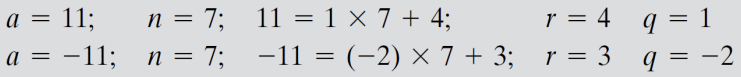
2절. 최대공약수(GCD)¶
최대공약수(GCD : Greatest Common Divisor)¶
-
\(p > 1\)인 정수 \(p\)가 소수이기 위한 필요 충분 조건
-
\(p\)의 약수가 \(±1\)과 \(±p\)뿐인 경우
-
ex) \(2, 3, 5, 7, 11, 13, 17, 19, …\)
-
\(a\)와 \(b\)의 최대공약수
-
\(a\)와 \(b\)가 동시에 나눠지는 가장 큰 양의 정수
- \(gcd(a, b)\) = \(max\) \([k\) such that \(k∣a\) and \(k∣b]\)
-
\(gcd(a, b) = gcd(a, −b) = gcd(−a, b) = gcd(−a, −b)\)
- ex) \(gcd(60, 24) = gcd(60, −24) = 12\)
-
두 정수의 유일한 공약수가 1인 경우
- 서로소
- 정수 \(a\)와 \(b\)가 서로소일 필요 충분 조건
- \(gcd(a, b) = 1\)인 경우
- ex) 8과 15
- 각 숫자는 소수 아님
- 두 숫자는 서로소(최대공약수가 1)
3절. Euclidean Algorithm¶
유클리디안 알고리즘 : $ d = gcd(a, b)$ 탐색¶
- \(gcd(a, b) = gcd(∣a∣, ∣b∣)\) 이므로 \(a ≥ b > 0\)라 가정
- \(a ≥ b > 0\)일 때, \(a = q_1b + r_1\) 만족, 여기서 \(0 ≤ r_1 < b\)
1 ) \(r_1 = 0\)인 경우¶
- \(b ∣ a\) 성립
- 따라서 \(d = gcd(a, b) = b\)
2 ) \(r_1 != 0\)인 경우¶
- \(d ∣ r_1\) 성립
-
따라서 \(d = gcd(a, b) = gcd(b, r_1)\)
-
관계 \(d ∣ a\)와 \(d ∣ b\)
- \(d ∣ (r_1 = a − q_1b)\)를 의미
-
\(c = gcd(b, r_1)\)라 가정
- \(d ∣ b\)와 \(d∣r_1\)로 \(d ≤ c\) 성립
- \(c ∣ (a = q_1b + r_1)\)이고 \(c ∣ b\)이므로 \(c ≤ d\) 성립
-
결론
- \(c = d\) 성립
- \(gcd(a, b) = gcd(b, r_1)\) 증명
유클리디언 알고리즘 과정¶
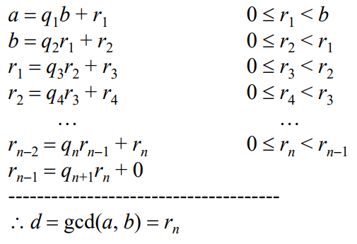
- \(b = r_0\) 가정
- 각 단계에서 \(d = gcd(r_i, r_{i+1})\), \(d = gcd(r_n,0) = r_n\)이 될 때까지 반복
\(gcd(1970, 1066)\)의 경우¶
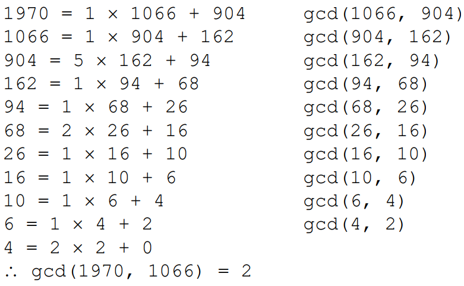
\(gcd(1160718174, 316258250)\)의 경우¶
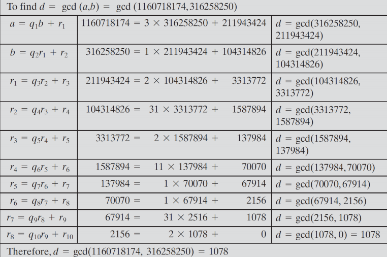
4절. 모듈(나눗셈기)¶
모듈러스(Modulus)¶
- \(a\) mod \(n\)
- \(a\)가 정수이고 \(n\)이 양의 정수일 경우 \(a\)를 \(n\)으로 나누었을 때의 나머지
- 정수 \(n\)은 모듈러스(Modulus)
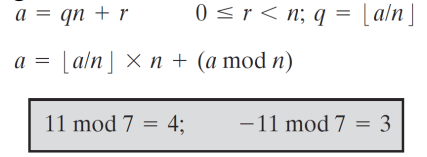
- (\(a\) mod \(n\)) = (\(b\) mod \(n\))
- \(a ≡ b\) (mod \(n\))
- 둘은 서로 동일
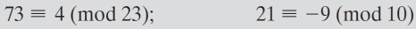
모듈러 산술¶
합동 관계(Congruence)의 특징¶
-
\(a ≡ b\) \((mod\) \(n)\)는 \(n ∣ (a − b)\)
-
\(a ≡ b\) \((mod\) \(n)\)라면 \(b ≡ a\) \((mod\) \(n)\)
-
\(a ≡ b\) \((mod\) \(n)\)이고 \(b ≡ c\) \((mod\) \(n)\)이면 \(a ≡ c\) \((mod\) \(n)\)
모듈러 산술 연산¶
-
\((a + b)\) \(mod\) \(n\) = \([(a\) \(mod\) \(n)\) \(+\) \((b\) \(mod\) \(n)]\) \(mod\) \(n\)
-
\((a - b)\) \(mod\) \(n\) = \([(a\) \(mod\) \(n)\) \(-\) \((b\) \(mod\) \(n)]\) \(mod\) \(n\)
-
\((a × b)\) \(mod\) \(n\) = \([(a\) \(mod\) \(n)\) \(×\) \((b\) \(mod\) \(n)]\) \(mod\) \(n\)
모듈러 산술 예시¶
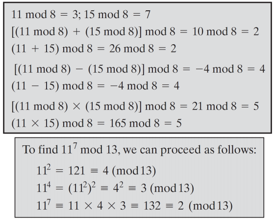
모듈러 8¶
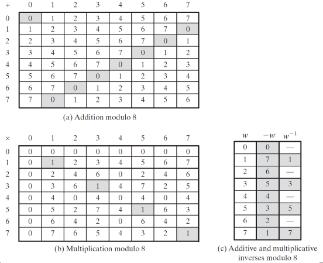
5절. \(Z_n\)¶
\(Z_n\) 모듈러 산술 특징¶
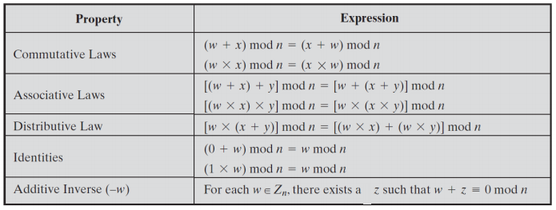
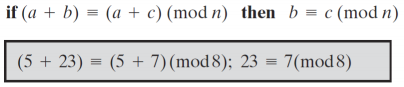
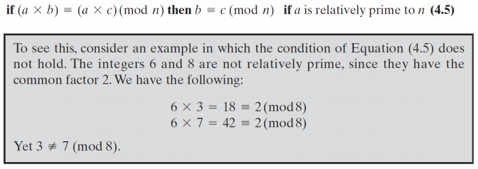
6절. 확장 유클리디언 알고리즘¶
\(ax\) + \(by\) = \(d\)¶
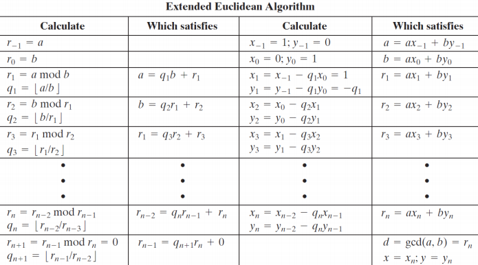
확장 유클리디언 알고리즘 예시¶
- gcd(259, 70)
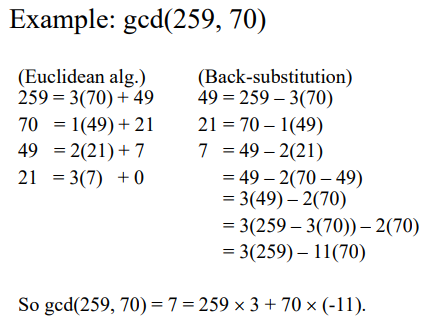
- \(a = 1759\), \(b = 550\)
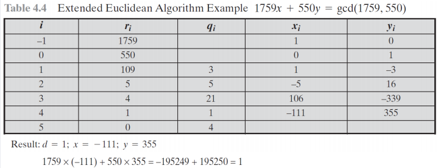
7절. 정수론¶
Group, Ring, Field¶
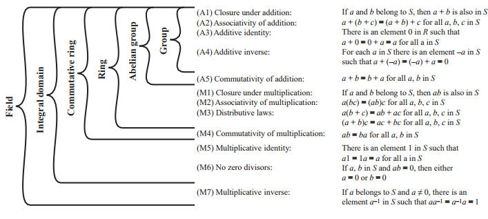
GF(7)¶
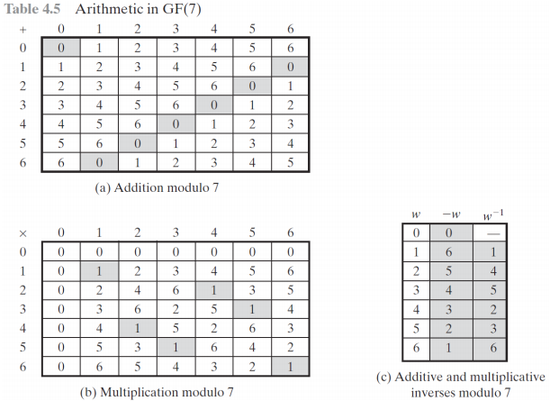
다항식 나눗셈(Polynomial Division)¶
- \(f(x)=q(x)g(x)+r(x)\) 의 차수(Degree)
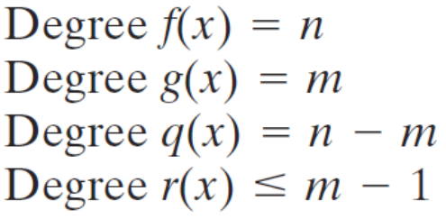
GF(2)에서의 다항식 예시¶
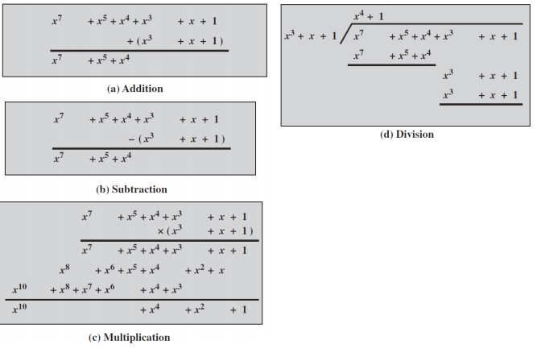
유클리디안 알고리즘¶
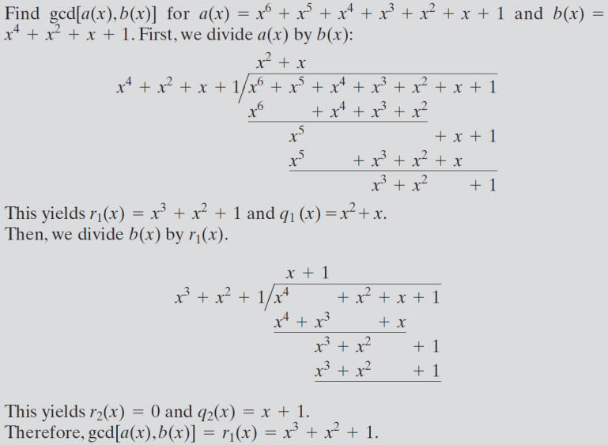
- Irreducible Polynomial(Prime Polynomial) : 소수 다항식
- 소수로 나눠진 다항식일 경우 효율 상승
- 식에서 인수분해가 더이상 불가능하기 때문
GF(\(2^n\))¶
- 동기(Motivation)
8비트씩 데이터를 처리하는 일반적인 암호화 알고리즘 정의하고, 이 과정에서 나눗셈 연산을 수행한다고 가정하자. 8비트를 사용하면, 정수는 0부터 255까지의 범위 표현이 가능하다. 허나 256은 소수가 아니기에, 만약 산술 연산이 \(Z_{256}\) (256 모듈 산술)에서 수행된다면, 이 정수 집합은 체(field)가 아니다. 256보다 작은 소수 중 가장 가까운 수는 251 이므로 \(Z_{251}\) (251 모듈로 산술)은 체(field)다. 하지만 이 경우, 정수 251부터 255까지를 표현하는 8비트 패턴은 사용되지 않게 되어 저장 공간의 비효율적인 사용이다.
- 예제 (Example)
GF(\(2_3\))을 구성하려면 차수가 3인 기약 다항식을 선택하는데 다항식은 두 개다. (\(x^3 + x^2 + 1\))과 (\(x^3 + x + 1\)) 이다. 후자를 사용하여 덧셈과 곱셈을 진행한다.
- 다항식 덧셈과 곱셈
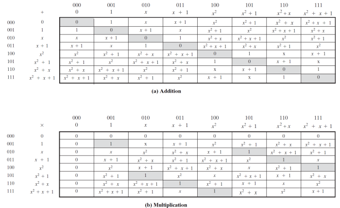
- 10진수 덧셈과 곱셈
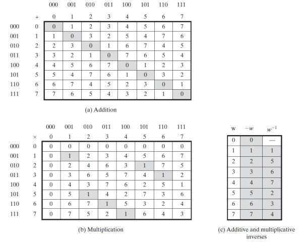
덧셈 예시(Addition)¶
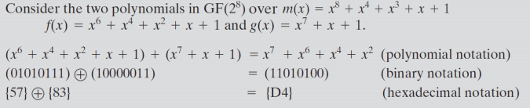
곱셈 예시(Multiplication)¶
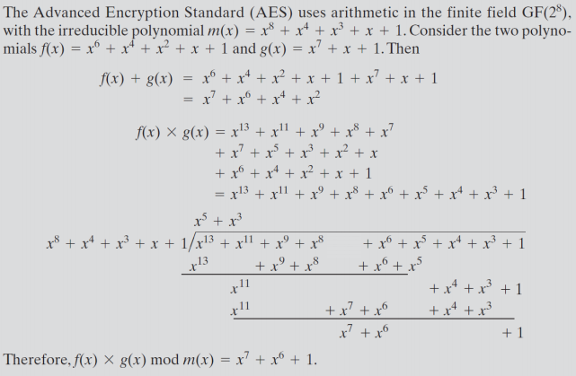
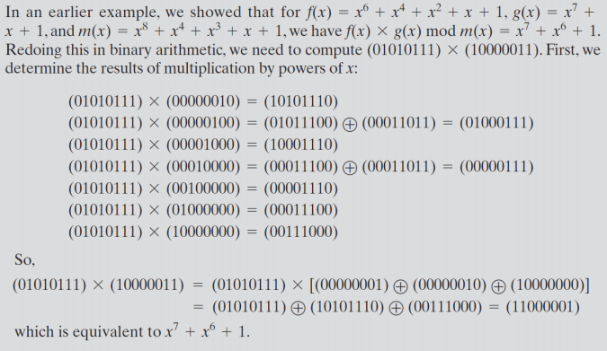
GF(\(p^n\))에서의 역원 : 확장 유클리디안 알고리즘 공식¶
- \(x_8 + x_4 + x_3 + x + 1\)을 법으로 하는 \(x_7 + x + 1\)의 곱셈 역원
- 답 : \((x_7 + x + 1)⋅x^7 ≡ 1\) (\(mod\) \(x_8 + x_4 + x_3 + x + 1\))
∴ $ x^7$
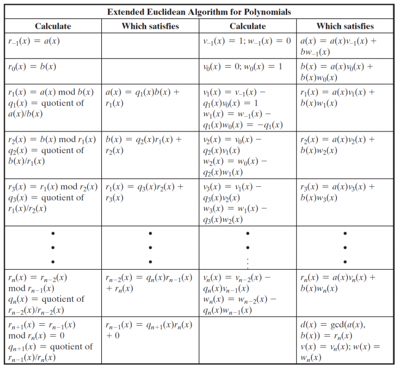
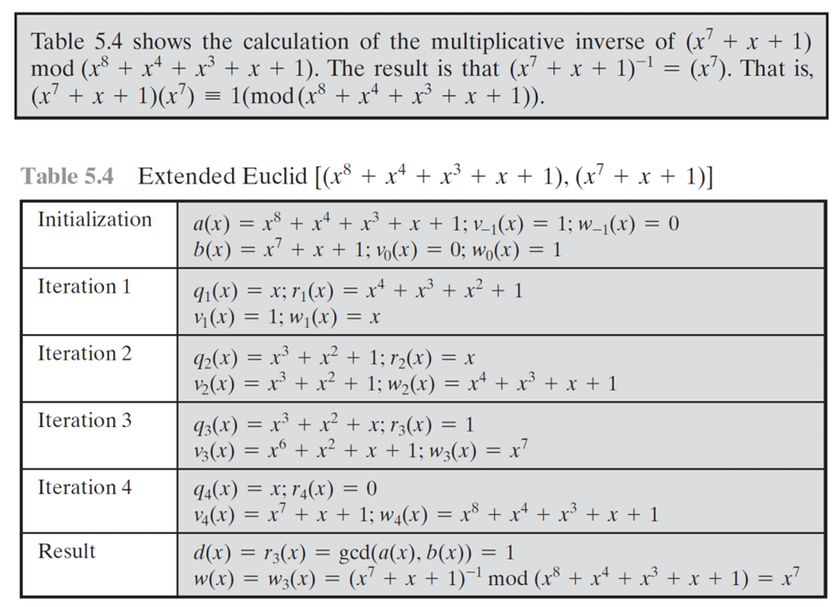